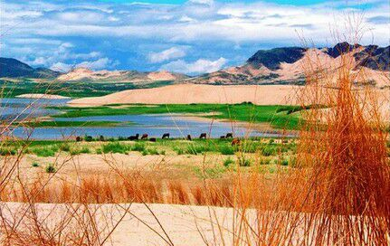
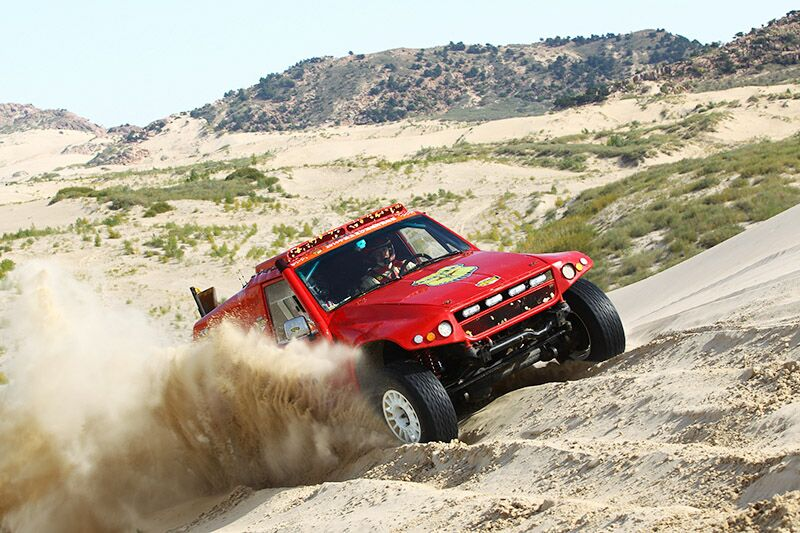

玉龙沙湖旅游度假区位于内蒙古赤峰市翁牛特旗乌丹镇境内，国家AAAA级景区，距赤峰市120公里。旗政府所在地乌丹镇区与该景区有三级油路相通。乌丹镇的玉龙沙湖度假区集沙漠、沙地、古松、怪石、奇峰、湿地、草原、湖泊为于一身，5万亩草原与茫茫无边的科尔沁沙地相连，沙地中有一眼清泉，在沙漠中积水成湖。沙漠中，有一面积达1.4万亩的湖泊。湖中又有十多座沙岛。形成沙中有湖、湖中有岛、岛上有草、草中有鸟的奇特沙湖景观。每年6--10月份，这里蓝天丽日，沙白水碧，草绿林翠，游人如织。目前景区内正规划建设四星级标准200间单体集装箱酒店。 玉龙沙湖景区沙丘高大陡险，垂直高度平均75米以上，沙子自然坡高约为70--100米，呈新月形，沙粒多为石英沙粒，颗粒均匀，晶莹剔透。响沙群的巨大陡峭的高差是大众户外运动的理想之地，为了让更多的大众游客接触到泛户外旅游文化的魅力，景区根据沙地地形特点，在不同的功能区域设置了野外露营、汽车营地、滑沙、沙漠滑翔伞、定向运动、徒步穿行等沙地项目。坦荡起伏的沙丘更是开展沙漠越野的首选之地，特此玉龙沙湖设计了初、中、高三个等级的越野赛道，所有来景区的观光游客都可以乘坐景区内专业沙漠越野车，进入沙漠腹地，观八百里瀚海。
红山文化寻根之旅主题木栈道：游客来到玉龙沙湖，可以将鞋袜脱去，赤脚在沙地上行走，登木栈道，亲近自然。 二、沙漠驼马队探险驿站：体验完徒步线路的游客可在驼马驿站选择骑马或骑骆驼游览沙湖。既可以省去登山时的疲劳，同时还可以一览无边沙漠的壮观之景。 三、沙漠冲沙车：坐在沙漠越野车上感受玉龙沙湖的冲沙路线，给您全新的沙湖印象，体验沙漠越野文化魅力。 主要接待设施：VIP休息大厅，超市，餐厅可提供自助餐、零点，沙漠风暴越野俱乐部可提供野外露营设备及娱乐设备的租赁，水洗厕所等。 主要活动项目：沙漠越野车体验、骑马、乘驼、皮划艇、滑沙、观摩崖石刻、儿童游乐区、野外露营、水上观鸟、蒙古族歌舞表演等。 主要景点 （1）玉龙沙湖：玉龙沙湖水面之大堪称翁牛特第一湖。玉龙沙湖名字的由来源于当地一个美丽的民间传说。相传四、五千年以前布日敦嘎查这一带并没有湖，风沙肆虐，旱魔猖獗，河流干涸，大地龟裂，寸草不生。一天玉皇大帝的两个女儿路过这里，她们为生灵涂炭而忧心如焚，动了恻隐之心，变成两个美丽的姑娘下凡，带领人们斗旱魔，战风沙，使这里的山变青了，水变绿了，昔日荒无人烟的地方变成了鱼米之乡。据当地老人们说，其甘湖和布日敦玉龙湖就是她们姐妹俩点化而成。人们称之为“龙女湖”。每当八月中秋月圆之时，有人还在湖边见到她们婀娜多姿的身影，听见她们甜美圆润的歌声。
